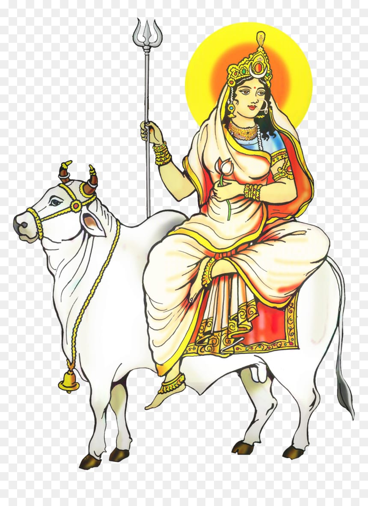
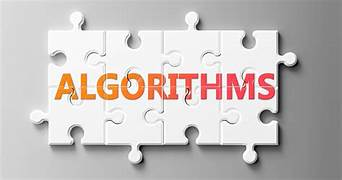
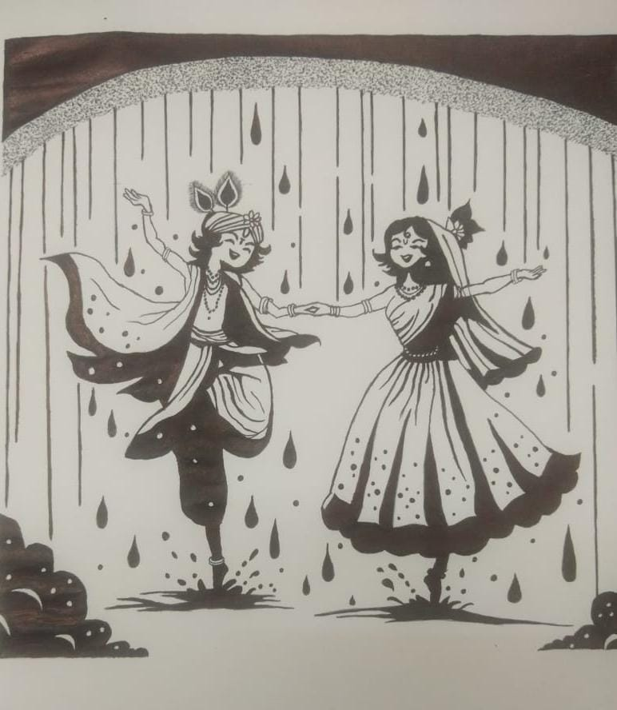

"Connecting Technology and Tradition: Nine Insights for Navratri"
Navratri is a significant Hindu festival that spans nine days, each dedicated to a different form of the goddess Durga.
Are you excitied to know the nine technical pieces of information that can be associated with each day of Navratri, reflecting the themes and deities celebrated?
Visit each day to know the cultural and technical (Computer Science) aspects of that day.
Here is Today's insights:
Day 1 : Shailaputri:  Represents the root of all creation. In technology, this can be likened to the foundational principles of programming, such as Algorithms, which serve as the building blocks for software development.  Algorithms are step-by-step procedures or formulas for solving problems. They are fundamental to computer science and are used in various applications, from data processing to machine learning. Recent updates include advancements in algorithm efficiency, particularly in machine learning and artificial intelligence, where new algorithms are being developed to improve predictive accuracy and reduce computational costs.
Art Gallery

By Moulya R G